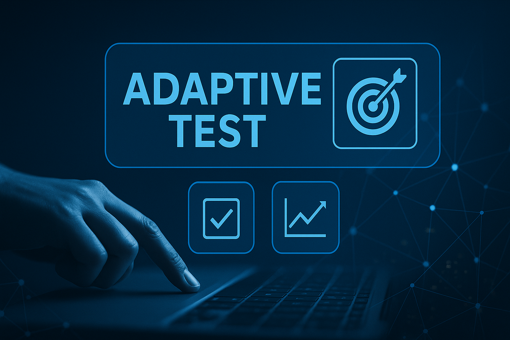
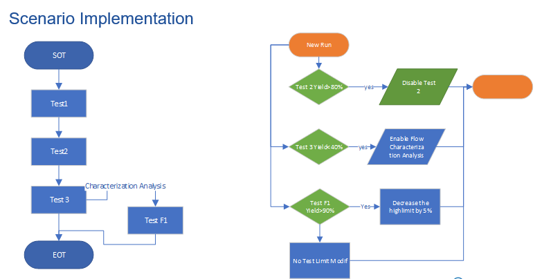
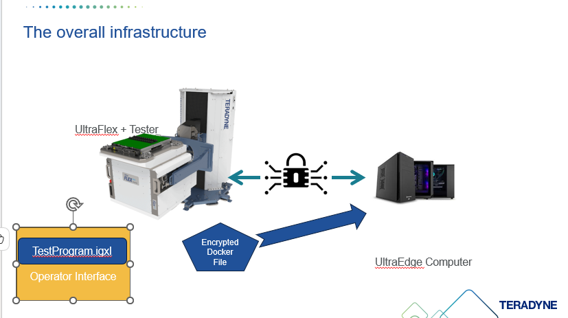
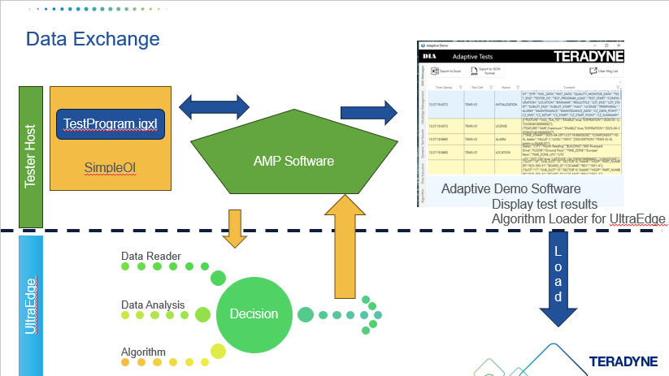
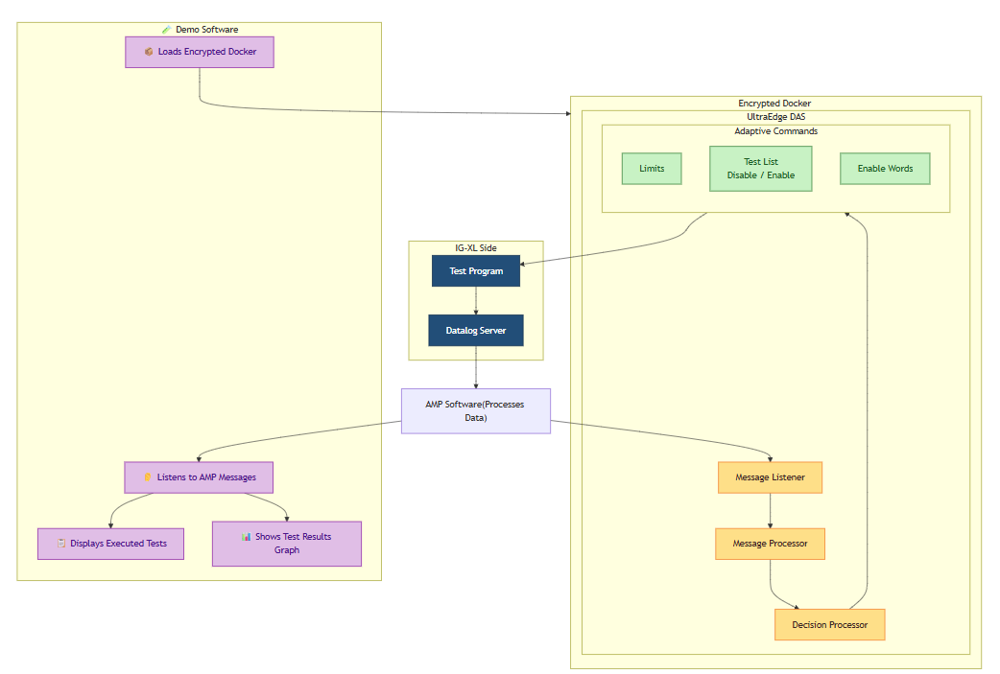
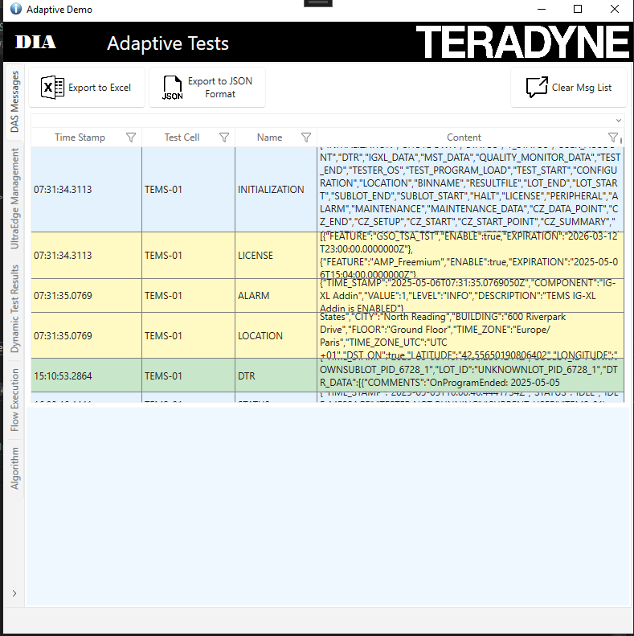
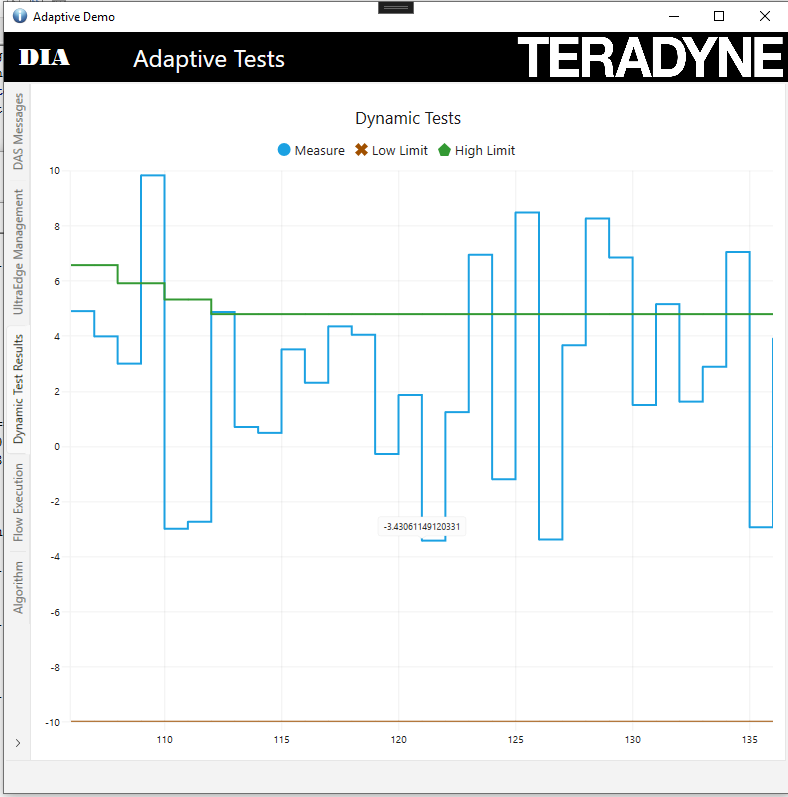

⚡ Accelerate Test Execution with Adaptive Test and UltraEdge
Reference: RA_451
Welcome to the Adaptive Test DAS Demo — a powerful illustration of how test programs can be made smarter, more flexible, and responsive to real-time conditions using UltraEdge technology.
Unlock Smarter Testing with DAS and UltraEdge
Welcome to the Adaptive Test DAS Demo — a powerful illustration of how test programs can be made smarter, more flexible, and responsive to real-time conditions. Whether you're running it locally or envisioning a scaled deployment on remote servers, this demo is built to showcase adaptability. As well during this demo we will use the UltraEdge computer in order to demonstrate how the powerfull computer can host your secured algorithm and interact with your test program without any modification of your test program.
What This Demo Demonstrates
Improving Test Efficiency with Archimedes In this scenario, we will address several challenges and demonstrate how Archimedes solutions can help resolve them. The system uses an algorithm that analyses current results to make decisions in real time:
- Test Time Reduction: If a test consistently achieves a certain yield threshold (e.g., 80%), the system will automatically disable that test to save time.
- Online Analysis: When a test fails too frequently, a diagnostic flow will be automatically triggered to help identify and analyse the root cause.
- Quality Improvement: Based on ongoing test results, the system will adapt test limits to better match the characteristics of the devices under test.
Which algorithm

- On the left, we see the structure of the test program: A simple sequence with three main tests—Test1, Test2, and Test3—and a sub-flow (disabled by default) that includes Test F1, which uses test limits for characterisation analysis.
- On the right, we detail the logic that implements the scenario described in the previous slide:
- Test Time Reduction: If Test2 reaches a yield of 80% or more, it will be automatically disabled to optimise test time.
- Online Analysis: If Test3’s yield drops below 40%, the system will activate the sub-flow and execute Test F1 for further characterisation.
- Quality Improvement: If Test F1 is active and its yield remains below 90%, the system will automatically reduce the high limit of the test by 5%, continuing until the yield improves.
Overall Infrastructure

This image illustrates the infrastructure used to deploy and protect the algorithm implementation described earlier. The Python-based scenario is packaged inside an encrypted Docker file. This file is initially stored on the tester host, then securely uploaded to the UltraEdge computer. Once it reaches the UltraEdge system, the Docker is decrypted locally and executed. This secure mechanism ensures that your intellectual property is fully protected. Even if you are testing your product in a third-party Test House, your algorithm—potentially containing sensitive logic or proprietary data—remains secure and inaccessible from outside. Importantly, the test program itself remains unchanged. Thanks to AMP, it is possible to interact with it directly and securely, without modifying the original test flow.Data Exchange

This images illustrates how data exchange is managed between the components. For demonstration purposes, we have implemented a system that captures and displays test data in real time. Note that this demo system does not interact with the test program itself—its role is only to display data, making the demonstration more engaging and easier to follow. Additionally, this system is responsible for copying the algorithm from the encrypted Docker file to the UltraEdge (UE) computer. Once the copy is complete, it acts as an observer, helping us showcase the type of data that can be captured via the AMP software. Once the algorithm is decrypted on the UltraEdge computer, it begins reading the data received from the AMP software. It then analyses this data using the algorithm and takes a decision accordingly. The resulting actions are then automatically applied to the test program. It’s important to highlight that no specific code needs to be embedded in the test program to support these adaptive decisions. The interaction is handled entirely through AMP and the UltraEdge system.Software Overview

Explore the Demo Software
The demo application includes four dedicated sections:
DAS Section
View all messages generated by the tester. Clicking on a message reveals its detailed contents.

UltraEdge Section
Into this tab you will be allowed to upload the docker file into the UltraEdge System

Flow Section
Into this section the system will show you which test has been executed and as well if a test has been disabled through an Adaptive Command.

Test Results Display Section
Displays the test results for Test F1 and its associated limits.

Technical Snapshot
| Component | Version |
|---|---|
| Language | C# |
| Framework | .NET 8 |
| Environment | Windows 10 |
| Excel | 2016 (64-bit) |
| IGXL | 10.60.02 |
Extend the Demo to Your Environment
To implement a similar system, we recommend reviewing the following guides:
| Reference Architecture | Description |
|---|---|
| RA_468 | How to implement a DAS in C# |
| RA_465 | How to send an adaptive command in Python |
See It in Action
Explore the complete Instructions to Run the Demo or browse the image gallery to discover key functionalities Looking to integrate this approach into your test strategy? Contact our team to explore how DAS can support your roadmap.